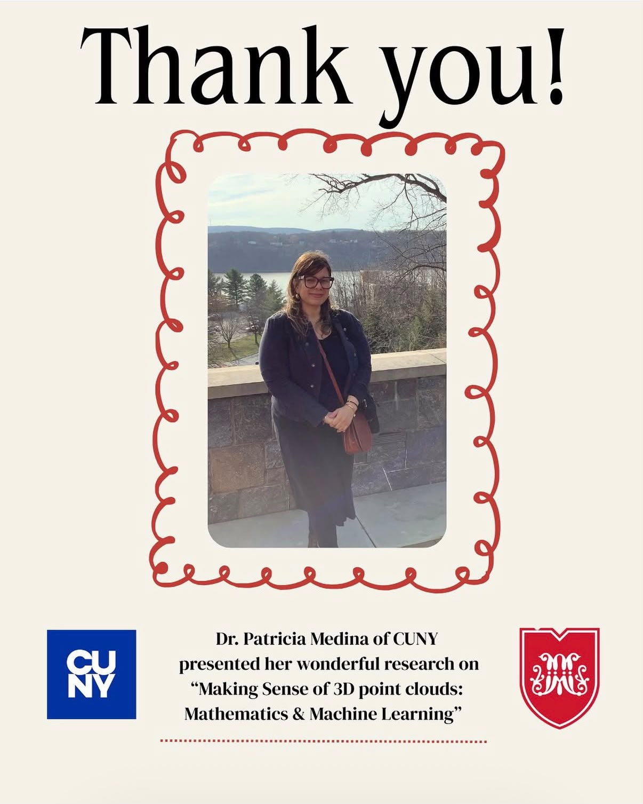
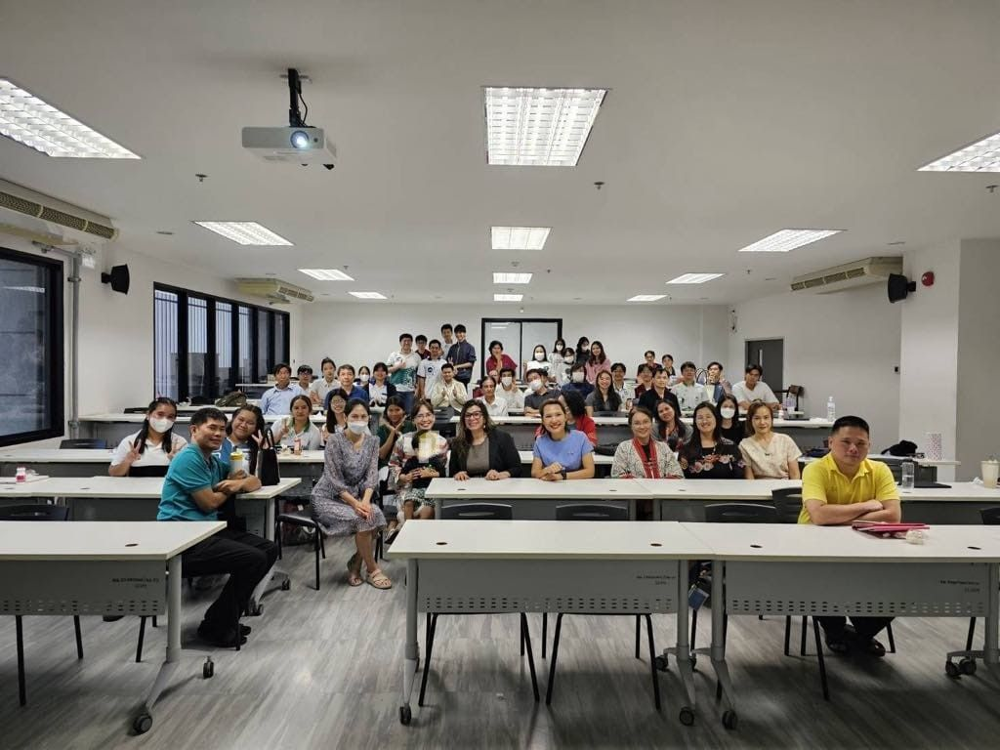

News
Recent research activities, awards, publications, mentoring, invited talks, and professional updates.
2026
October 2026
Invited Talk — Oregon State University Applied Mathematics and Computation Seminar
I gave an invited talk, “Dynamical System Autoencoders and Representation Learning,” in the Applied Mathematics and Computation Seminar at Oregon State University on October 2, 2026.
The talk examined hidden-state dynamics in Dynamical System Autoencoders and how repeated encoding affects learned representations, combining mathematical analysis with computational experiments on 3D LiDAR point clouds.
August 2026
Undergraduate Research Mentoring — CREST REU
I mentored undergraduate researcher Evelyn Pulla through the CREST REU program. Her summer research culminated in a poster presentation in August 2026.
July 2026
New Preprint — Dynamical System Autoencoders for LiDAR Classification
Our preprint, “Depth-Dependent Hidden-State Collapse in Dynamical System Autoencoders for LiDAR Point-Cloud Classification,” with Hy P. G. Lam, is available on arXiv.
The work studies how repeated transformations in dynamical autoencoder architectures affect hidden representations and downstream classification.
June 2026
International Congress of Mathematicians — AMS/NSF Travel Grant
I was selected to receive an AMS/NSF Established Mathematician Travel Grant to support my participation in the 2026 International Congress of Mathematicians (ICM 2026) in Philadelphia.
April 2026
Invited Seminar — Marist University
I gave an invited talk, “Making Sense of 3D Point Clouds: Mathematics & Machine Learning,” for the Marist University Department of Mathematics.

2026
Publication — Product Coefficients and 3D LiDAR Classification
Our work, “Integrating Product Coefficients for Improved 3D LiDAR Data Classification,” appeared in Lecture Notes in Networks and Systems. The paper investigates multiscale product coefficients as mathematically motivated features for 3D point-cloud classification.
2025
January 2025
Invited Colloquium — Kasetsart University, Bangkok
I gave an invited colloquium, “Enhancing Machine Learning with Mathematics: Better Mapping of the World,” in the Department of Mathematics at Kasetsart University in Bangkok, Thailand, on January 22, 2025.

January 2025
Invited Lecture — ICDMAI 2025, Kolkata, India
I gave an invited lecture, “Engineering Features for Machine Learning on Multi-Class 3D Point Clouds,” at the International Conference on Data Management, Analytics and Innovation (ICDMAI 2025) in Kolkata, India.
The conference and its invited speakers were featured in The Times of India. City Tech also featured my research and academic visits to India and Thailand.